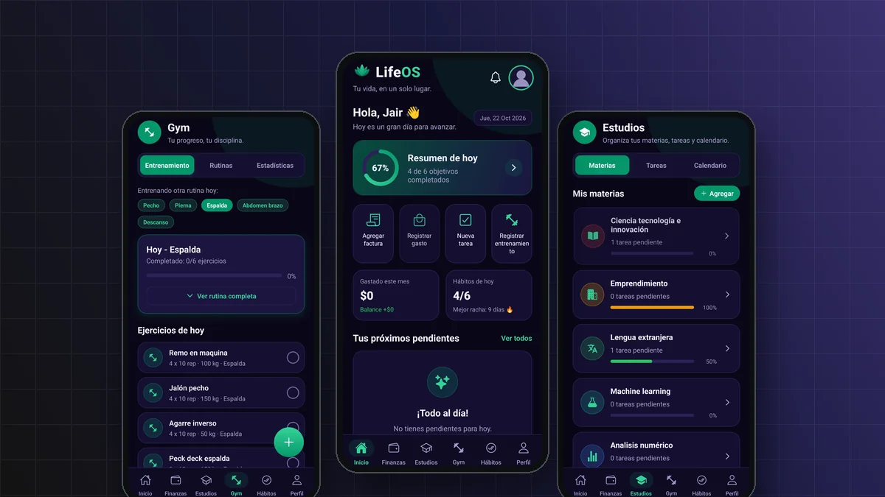
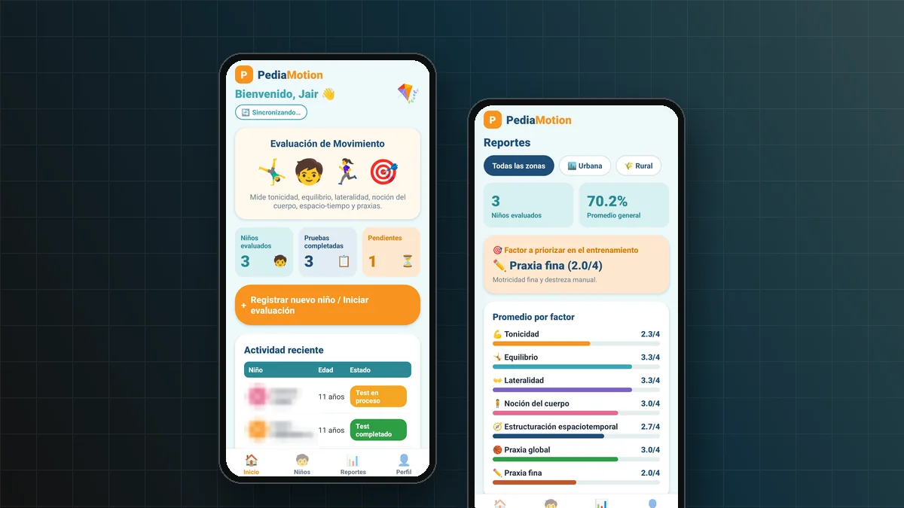
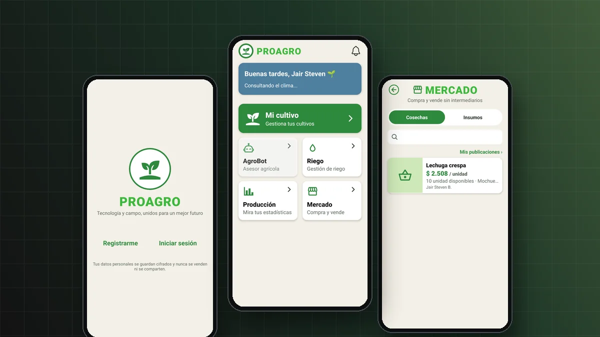

Desarrollo web
- HTML5Aplicado en proyectos
- CSS3Aplicado en proyectos
- JavaScriptAplicado en proyectos
- PHPAplicado en proyectos
Ingeniería de Software · Desarrollo web
Soy estudiante de Ingeniería de Software en la Universidad de Cundinamarca y desarrollador en formación. Me gusta crear aplicaciones, diseñar experiencias digitales y llevar ideas hasta proyectos que funcionan. Aquí comparto lo que he aprendido y los proyectos que marcan mi evolución.
.png)
01 sobre_mí
Estudio Ingeniería de Software en la Universidad de Cundinamarca. Lo que más me engancha de la carrera es el momento en que una idea deja de estar en papel y empieza a funcionar en una pantalla.
Me interesan dos cosas que van de la mano: el desarrollo de software y el diseño de interfaces. No me basta con que algo funcione; quiero que sea claro y cómodo de usar.
He trabajado en proyectos académicos y personales, desde la maquetación de este sitio hasta aplicaciones móviles y propuestas que usan inteligencia artificial para problemas reales, como la gestión de cultivos.
Mi meta es seguir creciendo como desarrollador, sumarme a equipos donde pueda aportar y aprender, y construir soluciones que respondan a necesidades concretas.
02 tecnologías
Lo que he usado en clase y en mis propios proyectos. Sin porcentajes: cada etiqueta dice en qué punto estoy con esa herramienta.
03 proyectos
Cada uno indica su estado real: terminado, en desarrollo o prototipo.

App personal de organización y productividad que reúne finanzas, estudios, gimnasio y hábitos en una sola plataforma, con un resumen diario de objetivos.

App para evaluar el desarrollo psicomotor de niños de 6 a 11 años en Soacha, basada en la Batería Psicomotora de Vítor da Fonseca.

Ecosistema AgroTech que apoya la gestión de cultivos con herramientas digitales e inteligencia artificial, y conecta a productores sin intermediarios.
Sitio personal creado como proyecto final del curso de maquetación web, para presentar mi perfil, explorar el diseño de interfaces y aplicar lo aprendido. Esta versión lo amplía a un portafolio completo.
04 formación
En curso · sexto semestre
Universidad de Cundinamarca
Formación en programación, bases de datos, desarrollo de aplicaciones e ingeniería de software.
Proyecto de curso
Proyecto final: primera versión de este sitio
HTML semántico, CSS, Grid, Flexbox y diseño adaptable a distintas pantallas.
Permanente
Proyectos prácticos y aprendizaje autónomo
Aprendo nuevas herramientas aplicándolas en proyectos propios, como LifeOS, PediaMotion y PROAGRO.
Español
Lengua nativa
05 enfoque
Más allá de las tecnologías, esto es lo que intento aportar en cada proyecto.
Convertir ideas y necesidades en soluciones que funcionan, escritas con código ordenado y fácil de mantener.
Construir experiencias visuales claras y organizadas, pensadas para que cualquier persona las use sin esfuerzo.
Probar herramientas y tecnologías nuevas para mejorar cada proyecto un poco más que el anterior.
06 contacto
Quiero seguir aprendiendo, colaborar en proyectos tecnológicos y encontrar oportunidades donde pueda aportar lo que sé y seguir creciendo.